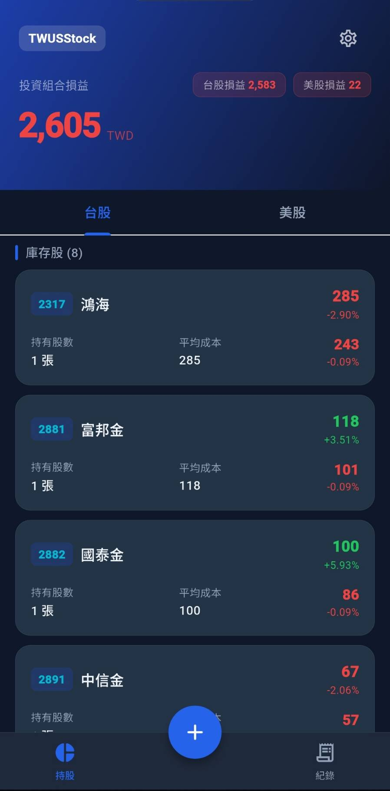
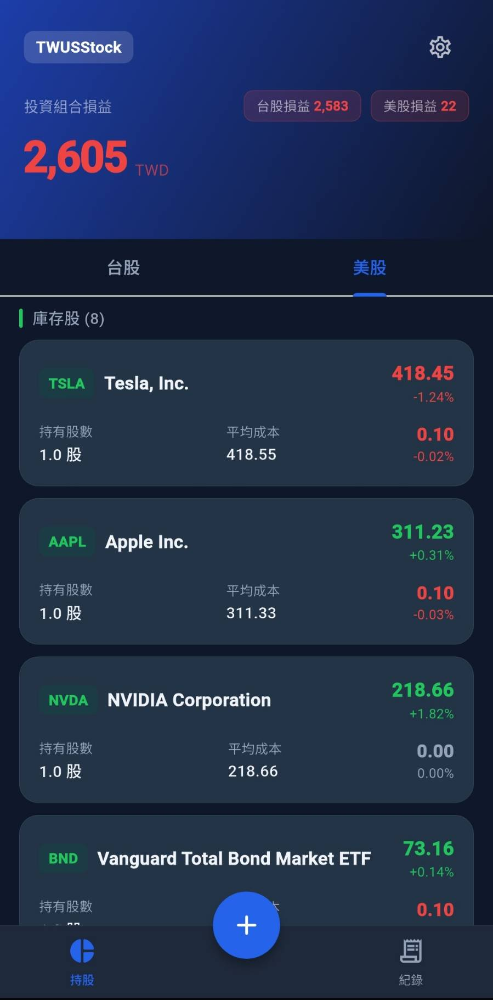
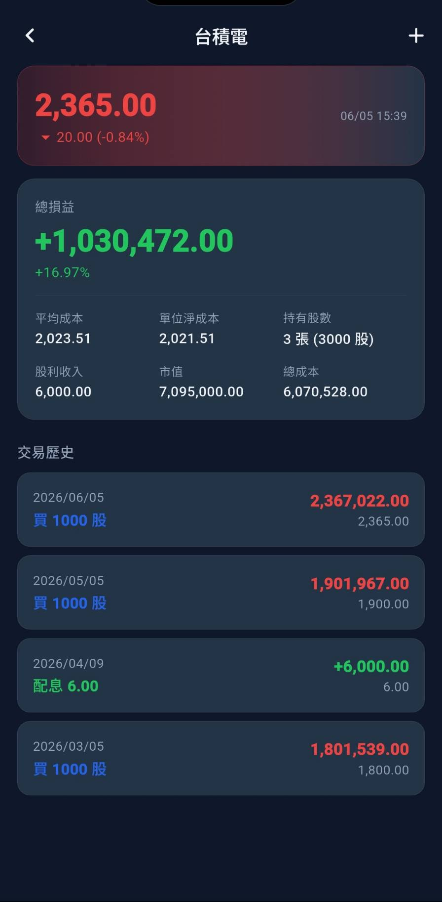
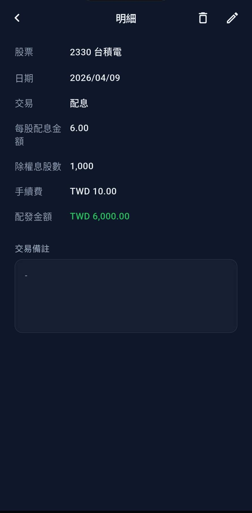
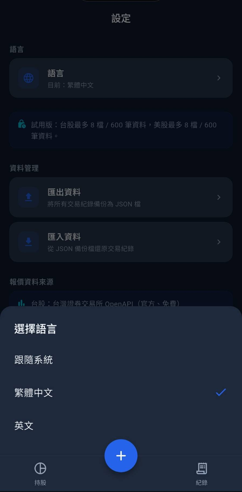

雙市場紀錄
支援台股與美股交易紀錄，適合管理不同幣別與市場的持股流水帳。
Local-first tools for personal records
我們製作清楚、實用、尊重資料自主的工具。第一款作品 TWUSStock，協助個人投資者在自己的裝置上整理台股與美股交易紀錄。
Software Promotion
一款為個人投資紀錄設計的本機記帳 App。它幫你整理交易、股利、 成本、損益與持股狀態，不提供交易、下單、投資建議或資產託管服務。
支援台股與美股交易紀錄，適合管理不同幣別與市場的持股流水帳。
交易資料主要儲存在使用者裝置，不上傳到 Ooniau Studio 伺服器。
使用者可自行匯出 JSON 備份，也可從備份檔匯入交易紀錄。
使用公開資料來源查詢股價、股票名稱與匯率，資料可能延遲或不完整。
App Screenshots
從持股總覽、個股明細到交易紀錄與設定頁，TWUSStock 以深色介面呈現台股與美股投資紀錄， 讓資料掃描、損益辨識與備份管理更直覺。





Privacy Policy Summary
TWUSStock 不建立使用者帳號，不含廣告 SDK，也不會主動將你的交易紀錄 上傳至 Ooniau Studio。交易資料、備註與設定主要保存在你的裝置上。
Full Privacy Policy
生效日期：2026-06-05
TWUSStock 會在你的裝置本機儲存你輸入的股票交易紀錄與 App 設定， 例如股票代號、市場、日期、交易類型、價格、股數、手續費、稅金、 匯率、備註與語言偏好。Ooniau Studio 不經營 TWUSStock 的使用者帳號 或雲端資料庫，也不接收或保存你的交易紀錄。
當你使用股票搜尋、報價或匯率功能時，App 可能會將股票代號、搜尋文字 或查詢請求傳送至第三方資料來源，例如台灣證券交易所 OpenAPI、 證券櫃檯買賣中心 OpenAPI、Yahoo Finance 與台灣銀行匯率服務。 這些請求用於提供查詢功能；第三方服務可能依其政策處理 IP 位址、 請求時間、User-Agent 與查詢內容等必要技術資訊。
TWUSStock 可讓你匯出 JSON 備份檔，也可從 JSON 檔匯入交易紀錄。 匯出的檔案可能包含你輸入的財務紀錄。若你將檔案分享給他人或儲存在 第三方雲端服務，該檔案後續的保管、分享與刪除由你與該服務負責。
Ooniau Studio 不販售個人或敏感資料。TWUSStock 不含廣告 SDK， 也不會故意將你的本機交易紀錄分享給 Ooniau Studio。使用報價與匯率 查詢功能時，App 會依功能需求與第三方資料來源互動。
TWUSStock 停用 Android 對資料庫、SharedPreferences 與 App 檔案的雲端備份 與裝置轉移備份。App 使用 HTTPS 端點進行網路查詢，並停用 Android 明文流量。 沒有任何儲存或傳輸方式能保證完全安全，請妥善保護你的裝置與備份檔。
你的交易紀錄會保留在裝置上，直到你刪除交易、清除 App 儲存空間、 解除安裝 App，或透過匯入新增/覆蓋資料。匯出的備份檔會保留在你選擇的 儲存位置，直到你自行刪除。TWUSStock 不建立帳號，因此沒有帳號刪除流程。
TWUSStock 並非為兒童設計，也不以 13 歲以下使用者為目標族群。
Ooniau Studio 可能因功能、資料處理方式或法規需求更新本政策。 若有隱私或資料處理問題，請使用 Google Play 商店頁面顯示的開發者 聯絡方式與 Ooniau Studio 聯繫。
TWUSStock 是記帳與資訊參考工具，不構成投資、稅務、會計、法律或財務建議。 市場價格、匯率、計算結果與圖表可能延遲、中斷或有誤。使用者應自行查證資訊， 並對自己的投資決策與資料備份負責。
TWUSStock 使用網路權限查詢公開報價與匯率。App 不提供交易、付款、貸款、 加密貨幣錢包或資產託管功能，也不使用位置、聯絡人、相機、簡訊、麥克風或電話權限。
Contact
若有 TWUSStock、隱私政策或資料處理相關問題，請使用 Google Play 商店頁面 顯示的開發者聯絡方式與我們聯繫。